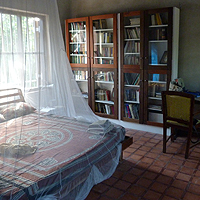
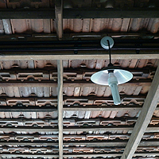
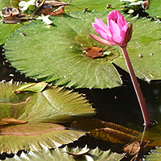
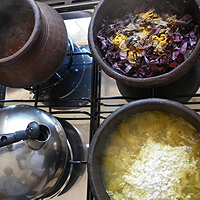
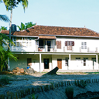
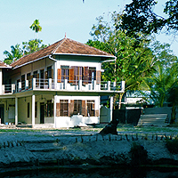
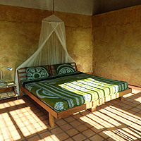
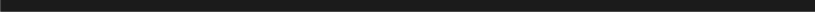

Home | Art Museum | Homestay | Photos | Latest | Contact




SYLVIANDER HOUSE HOMESTAY
HOMESTAY
VISION
LOCATION



THE HOUSE
The house has been built according to Vaastu, a science which enables nature and people to live in harmony. It is a good place for a relaxed holiday, for a traditional Kerala massage, workshops/seminars of all kinds. We could accommodate eight persons comfortably. The traditional way of construction, use of organic materials, ceiling height of rooms, number of windows which allow good airflow, plastering with 'kummayam' — traditionally known and used in olden times in order to keep the room cool and dry – a blessing in the tropical climate of Kerala. ('Kummayam' is a mixture of burnt shell powder and sand with the natural glue of a creeper grown in the area).
The windows and doors were collected over more than 12 years, precious pieces which were rescued from old, demolished traditional houses in Kerala. The windows and doors have different formats, giving a special look. Some windows and doors are more than 100 years old and made of teak-wood The door of the Art Museum and some windows come from a church, the door of Alexander's Studio once belonged to the room of a Vicar in the church. The gable roof with the double tiles technique was once upon a time considered 'typical' for the colonial old buildings in Fort Cochin. The tiles and some windows come from the ancient Travancore Post Office in Cochin Harbour.
GUEST ROOMS
From the western veranda a variety of birds can be spotted — these include kingfishers, woodpeckers, kakadu , uppan, hummingbird and a lot of crows, chase the Krishna-eagle away high up in the sky.
Depending on the season the sound of the sea is heard, especially during the monsoon and and soon after (June to October). In these months, it is not possible to swim in the sea but you still can swim in one of the ponds of Sylviander House. The fisherman's beach which is close by (400m) is garlanded by coconut palms.
POSSIBILITIES: WORKSHOPS, SEMINARS
POSSIBILITIES: TRADITIONAL KERALA MASSAGE
POSSIBILITIES: FOOD
The price of staying includes breakfast. If you wish, you may have lunch and/or dinner with Sylvie and Alexander for a moderate additional amount. Green tea and rainwater is provided all day.
CLICK HERE TO REQUEST A QUOTE
POSSIBILITIES: EXCURSIONS
ART MUSEUM
Sylvie Bantle and Alexander Devasia

ALAPPUZHA, KERALA, INDIA
Opened in December 2012 after seven years of construction, silence and privacy are the "luxuries" of Sylviander House, situated on the outskirts of the southern city of Alappuzha (also known as the "Venice of the East"). The Green Building is surrounded by a beautiful garden and small ponds. The structures are built with natural material 'kummayam' (Lime Mortar), antique wooden windows and traditional wooden doors which keep the rooms airy and cool. Inside, the traditional Kerala-style bathrooms and spacious verandas create an ambience of olden times — when nature and humans were in perfect balance.
For several years Sylvie and Alexander were searching for a place, where they could live and work as artists, where there would be enough space to welcome our guests, a place where we gather like-minded people for creative activities, to exchange ideas, to build intercultural bridges or just simply to relax and enjoy the good things in life. Their search for such a place started from the south of France and right up to Sicily in Italy. Soon they realised that they could not 'afford' such a vision in Europe and so they continued their search in Alexander's birthplace in Kerala, South India. They finally found a piece of land at Chettikad near Alappuzha. The true beauty of this place made both of them say — Yes! This is it!
Away from noise and pollution, Sylviander House is placed in the idyllic village landscape of Chettikad, 5 kms north of Alappuzha; 70 kms from Kochi International Airport at Nedumbassery and about 6kms from Alappuzha Railway Station. (Refer Google Maps Below)
The plan of the two-floor building has a L-shape and both floors have verandas. To the east is the main entrance and upstairs is the morning tea veranda for reading the newspaper and having a cup of tea with the first light of the rising sun. To the west is a big space to enjoy the view of the garden with a round pond and an old grown biotope and the colored sky during sunset or stars in the night. Sylviander House has 12 rooms which comprise of an Art Museum, guest room, hall, family room, kitchen and a massage room, an artist studio + sleeping room, writer's room + sleeping room.
Each guest room is approximately 20 sqm and is simply equipped with a large size bed of 1.80m x 2.00m with a mosquito net, 2 small side tables with a reading lamp, a ventilator, an antique cabinet, 2 chairs and a table. To the south leads a second door to a small veranda with an over roofed open air washing place. From there you enter the bathroom with the toilet. The walls are plastered with coloured shell powder and waxed like the terracotta tiles on the floor. In one corner is a basin, from where you draw water to take shower. This last breath of Kerala's past is a great pleasure beside saving water.
Sylviander House is an ideal place for small groups using the space for their workshops or seminar activities. Guests who are interested in art or writing can find tips and inspiration from Alexander or Sylvie. Guests can also get in contact with local artists, dancers, Yoga teachers, musicians, or attend exhibitions in Cochin or temple festivals, classical dance performances, snake rituals etc.
For a massage treatment for a minimum of nine days should be taken into consideration. Exhausting activities are not recommended during these days. The massage with a traditional mixture of Ayurvedic oil takes around 45 minutes followed by a medicinal bath in warm water of boiled herbs or barks.
At Sylviander House, organic local food is cooked carefully and always fresh is preferred and is a combination of Kerala and European foods. Some vegetables even grow at Sylviander House. Breakfast is mainly a variety of Kerala dishes — Upma, Dosa, Idli, Idiappam, Appam, Roti… sometimes Sylvie can bake a fresh bread served with home-made jam, and of course tea, black or green, Chai or coffee. Lunch includes rice, vegetable curries and — mostly — fish and a salad of cucumber and tomatoes with olive oil dressing.
The nearby surroundings are easy to explore with cycles or auto-rickshaws. A boat may also be hired from the nearby jetty for a wonderful trip through the backwaters since the location is right in the heart of Alappuzha. For sightseeing a taxi may also be arranged. Numerous spots of interest can be found within 50 kms. An additional and secret excursion point is – a forest temple in a cave. Sylvie likes to refer to this part of the excursion as "The search for the dancing God" and describes it in German as "Die Suche nach dem tanzenden Gott"
An Art Museum in Kerala — why not in a village? That is an old dream of Alexander Devasia. His permanent collection and new paintings have a space of 60 sqm and Alexander is happy to showcase and exhibit the works of other painters and hold painting workshops here. The elastic dance floor of the Art Museum is made of wood was the wish of Sylvie Bantle so as to have a space dedicated to dance, yoga and public performances.
sylvie.bantle@sylvianderhouse.com, alexander.devasia@sylvianderhouse.com

VIEW PHOTOS FROM SYVIANDER HOUSE

DIRECTIONS TO SYLVIANDER HOUSE: PDF | MAPS
Tel: +91.9645817014 Email: Life@sylvianderhouse.com Web: www.sylvianderhouse.com